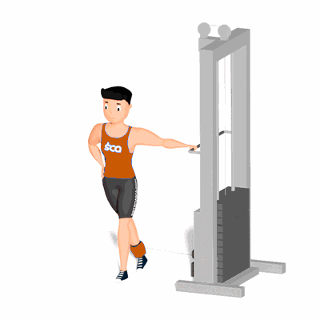

Glúteo Cruzado no Cross Over

O exercício trabalha o fortalecimento e hipertrofia dos músculos do glúteo.
Ficha Técnica
Tipo: Musculação
Grupo Muscular: Glúteo
Aparelho: Nenhum
Músculos: Nenhum
Como realizar
- Fique de lado para o Cross Over;
- Na perna que estiver no lado oposto ao Cross Over, coloque o puxador fivela na altura do tornozelo;
- Coloque essa perna atrás da outra e inicie o movimento elevando a perna para a lateral o mais alto que conseguir, concentrado o esforço no músculo do glúteo;
- Desça a perna controladamente à posição inicial, repita o movimento;
- Ao término das repetições, repita os movimentos com a outra perna.
 RC STORE
RC STORE